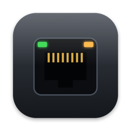
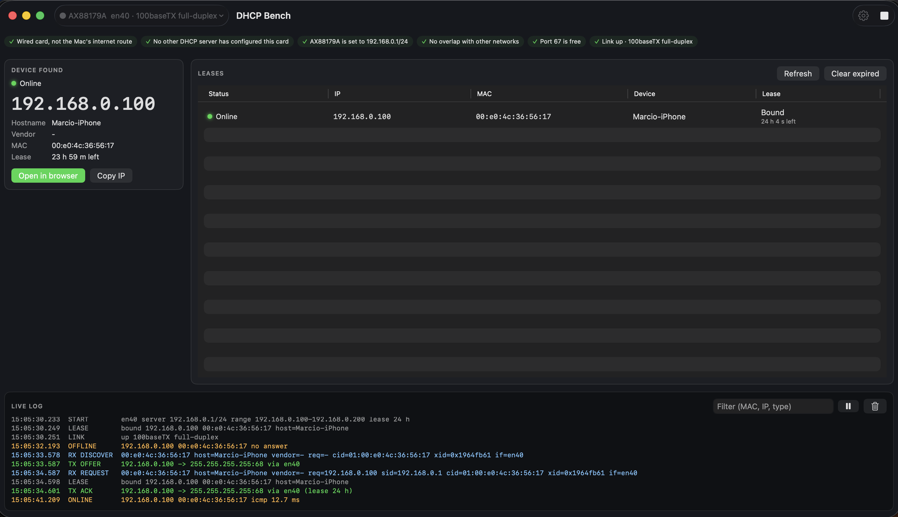

DHCP Bench
Give a bench device its first IP address, straight from your Mac.
Cable a PDU, switch or access point to a USB Ethernet adapter, press Start, and DHCP Bench hands it an address and tells you the moment it answers. Then open its web page or SSH in and set it up.
Download DHCP Bench 0.2.0
How it works
Connect
Plug a USB Ethernet adapter into your Mac and cable it to the device.
Start
Pick the adapter in the toolbar. When every check is green, press Start.
Set it up
The device appears with its new address. Open its web page, or copy the IP for SSH.
Made for the workbench
Only the card you pick
Serves one wired network card and nothing else. Never Wi-Fi, bridges or VPNs, and it will not start on a network that already has a DHCP server.
Checks before it starts
Wired card, not your internet route, the right address, link up, port 67 free. Each check says what to fix.
Knows when the device answers
Every lease shows whether the device is online, with Open in browser and Copy IP one click away.
A live log you can filter
Every DISCOVER, OFFER, REQUEST and ACK as it happens, filtered by MAC, IP or type, and kept in a daily log file.
A command-line twin
dhcpbench serve --iface en5 runs the same server from Terminal, with JSON output for scripts.
Updates itself, never mid-job
Checks once a day and asks before installing. While the server is running, it waits until you press Stop.
Install
- Download the installer and double-click it.
- Open DHCP Bench from your Applications folder.
- The first time you press Start, macOS asks whether DHCP Bench may find devices on your local network. Choose Allow.
Needs macOS 14 Sonoma or later on a Mac with Apple silicon, a USB Ethernet adapter and a cable to the device.
What's new
DHCP Bench 0.2.0
- DHCP Bench now updates itself. It checks once a day and asks before installing, never while the server is running.
- New: DHCP Bench > Check for Updates…, and a Settings switch for the daily check.
- The
dhcpbenchcommand now lives inside the app, so it always matches the app's version.
Questions
Is it safe to run on my office network?
DHCP Bench only serves the wired network card you choose. It never answers on Wi-Fi, bridges or VPNs, and it refuses to start on a card that is already on a network with its own DHCP server. Your Mac's internet connection is left alone.
Why does macOS ask for Local Network access?
Handing out addresses and checking whether a device is online means talking to devices on your local network, which macOS asks you to allow once. You can change it later in System Settings, Privacy & Security, Local Network.
Why does the installer ask for my password?
It puts the app in Applications and the dhcpbench command in /usr/local/bin, which needs an administrator. After that the app belongs to the administrator who installed it, so updates need no password.
How do updates work?
Once a day DHCP Bench checks for a new version and asks before installing it, never while the server is running. Every update is signed, and DHCP Bench refuses one that is not. You can also choose DHCP Bench, Check for Updates.
How do I uninstall it?
Quit DHCP Bench, then in Terminal:
sudo rm -rf "/Applications/DHCP Bench.app" /usr/local/bin/dhcpbench
sudo pkgutil --forget com.dhcpbench.pkgYour leases, logs and settings stay in ~/Library in case you come back.